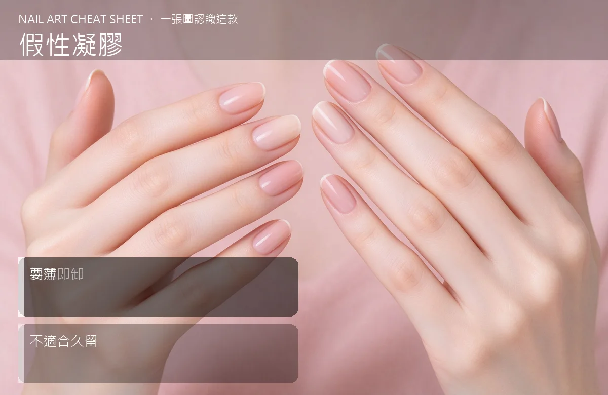

美甲假性凝膠是什麼？入門入門攻略
假性凝膠是『看起來像光療、撕起來像貼紙』的過渡款——美給你看，但只能短暫擁有。
假性凝膠原理與辨識重點：美甲師不說的剝開即卸
想體驗凝膠的亮，又不想被綁住三週？這款就是你的過渡選項。它又叫剝式凝膠。塗起來像凝膠，也要短暫照燈固化，但底層設計成『可剝離』。好處是幾天後想換，從邊緣一撕就整片下來，完全不傷甲。缺點就是它撐不久——通常 3–5 天、最多一週就開始翹。
誰適合做假性凝膠？快速卸甲對號入座
活動、約會、拍照前想換個新色，又不想認真做沙龍凝膠的人。
假性凝膠美甲施作步驟：剝式凝膠
甲面去油、別磨太狠 → 薄上假性凝膠（一次只能薄塗，厚了撕不順）→ 照燈固化 → 要卸時從一角輕掀，慢慢整片撕。
假性凝膠優缺點分析：美甲持久度與傷甲評估
| 優點 | 說明 |
|---|---|
| 撕卸免泡、真的零傷甲，換色成本低，在家就能操作。 | 是韓系流派的招牌，入門就能上手 |
| 缺點 | 說明 |
| 持久度差，碰水、做家事加速翹起；太厚還會撕成一半一半。 | 前置與別把它當『真凝膠』用一整個月。翹了你硬留，反而卡髒東西、指甲發霉風險。沒顧好會打折 |

假性凝膠新手雷區：要薄與常見錯誤
注意：別把它當『真凝膠』用一整個月。翹了你硬留，反而卡髒東西、指甲發霉風險。
假性凝膠和其他美甲做法的差別比較
跟可剝底膠（peel-off-base）很像，但假性凝膠是『全套剝離系統』，連色膠都設計成可剝；可剝底膠只有底層可剝、上面還是一般色膠。
假性凝膠美甲常見問題 FAQ
Q：它跟穿戴甲哪個方便？ A：穿戴甲可重複戴、但貼合度較差；假性凝膠貼合真甲、但只能撕一次。
Q：可以撐過一整個週末嗎？ A：可以，但避免泡澡、洗盤子，大約 3–5 天是安全區間。